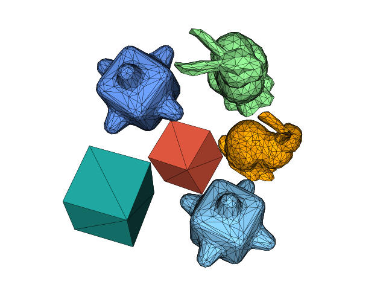
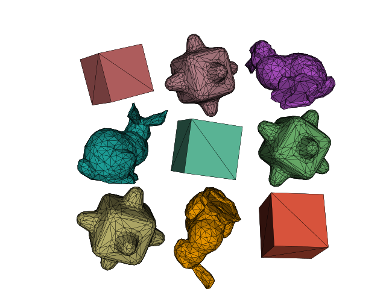

\(\newcommand{\A}{\mat{A}}\)
\(\newcommand{\B}{\mat{B}}\)
\(\newcommand{\C}{\mat{C}}\)
\(\newcommand{\D}{\mat{D}}\)
\(\newcommand{\E}{\mat{E}}\)
\(\newcommand{\F}{\mat{F}}\)
\(\newcommand{\G}{\mat{G}}\)
\(\newcommand{\H}{\mat{H}}\)
\(\newcommand{\I}{\mat{I}}\)
\(\newcommand{\J}{\mat{J}}\)
\(\newcommand{\K}{\mat{K}}\)
\(\newcommand{\L}{\mat{L}}\)
\(\newcommand{\M}{\mat{M}}\)
\(\newcommand{\N}{\mat{N}}\)
\(\newcommand{\One}{\mathbf{1}}\)
\(\newcommand{\P}{\mat{P}}\)
\(\newcommand{\Q}{\mat{Q}}\)
\(\newcommand{\Rot}{\mat{R}}\)
\(\newcommand{\R}{\mathbb{R}}\)
\(\newcommand{\S}{\mathcal{S}}\)
\(\newcommand{\T}{\mat{T}}\)
\(\newcommand{\U}{\mat{U}}\)
\(\newcommand{\V}{\mat{V}}\)
\(\newcommand{\W}{\mat{W}}\)
\(\newcommand{\X}{\mat{X}}\)
\(\newcommand{\Y}{\mat{Y}}\)
\(\newcommand{\argmax}{\mathop{\text{argmax}}}\)
\(\newcommand{\argmin}{\mathop{\text{argmin}}}\)
\(\newcommand{\a}{\vec{a}}\)
\(\newcommand{\b}{\vec{b}}\)
\(\newcommand{\c}{\vec{c}}\)
\(\newcommand{\d}{\vec{d}}\)
\(\newcommand{\e}{\vec{e}}\)
\(\newcommand{\f}{\vec{f}}\)
\(\newcommand{\g}{\vec{g}}\)
\(\newcommand{\mat}[1]{\mathbf{#1}}\)
\(\newcommand{\min}{\mathop{\text{min}}}\)
\(\newcommand{\m}{\vec{m}}\)
\(\newcommand{\n}{\vec{n}}\)
\(\newcommand{\p}{\vec{p}}\)
\(\newcommand{\q}{\vec{q}}\)
\(\newcommand{\r}{\vec{r}}\)
\(\newcommand{\transpose}{{\mathsf T}}\)
\(\newcommand{\tr}[1]{\mathop{\text{tr}}{\left(#1\right)}}\)
\(\newcommand{\s}{\vec{s}}\)
\(\newcommand{\t}{\vec{t}}\)
\(\newcommand{\u}{\vec{u}}\)
\(\newcommand{\vec}[1]{\mathbf{#1}}\)
\(\newcommand{\x}{\vec{x}}\)
\(\newcommand{\y}{\vec{y}}\)
\(\newcommand{\z}{\vec{z}}\)
\(\newcommand{\0}{\vec{0}}\)
\(\renewcommand{\v}{\vec{v}}\)
\(\renewcommand{\hat}[1]{\widehat{#1}}\)
CS-GY-6533 Computer Graphic: 3D Scene Editor
A 3D scene editor implemented in C++ combined with OpenGL. It supports the functionalities of insert, tranlate, colorize, rotate, scale, animate, delete for triangle mesh objects in .OFF file format and it allows users to export scene into .svg files.
How To Use
O: Start Translation mode.
P: Start Deletion mode.
U: Start Animation mode.
SPACE: Start/Stop the rotation of camera (by default the camera rotates arounf Y axis).
<, >: Change color for selected object.
/: Change projection (perspective or orthogonal)
[,]: change the shading method (vertex normal or face normal)
↑,↓,←,→: Move the camera on trackball up, down, left, right respectively by 2 degree.
+,-: Zoom in or out by 3%.
J,M: Rotate the selected Object by 2 degree clockwise or counter-clockwise around the Y axis.
H,N: Rotate the selected Object by 2 degree clockwise or counter-clockwise around the Z axis.
G,B: Rotate the selected Object by 2 degree clockwise or counter-clockwise around the X axis.
K,L: Scale the selected object up or down by 5% respectively.
W,S: Move the camera on Y axis.
E,D: Move the camera on X axis.
R,F: Move the camera on Z axis.
Z: Start the animation if the bezier curve for an object was constructed.
X: Take a screenshot and export scene to .svg file.
Q: Quit the program.
Files & Data Structures
This section will introduce the main data structures that I defined for the general use in this Assignment. The following classes are defined in Helper.h and Editor.h file.
VertexBufferObject
the VBO class for program. Vertex position for each object uploaded only once to the GPU.
Program
where we bind vertex_shader and fragment_shader.
Editor
svg_export
read_off
Editor class is responsible for implementing all functionalities. it has two sub modules for specific tasks. (svg_export for saving .svg file and read_off to load .OFF into Eigen Matrix).
normal
normal is a util class that computes face normal and vertex normal given object.
VertexBufferObject
A VBO is a data container that lives in the GPU memory. It uploads the vertex data we define as a matrix on CPU side and connects data with a position "slot" on GPU side.
class VertexBufferObject {
public:
typedef unsigned int GLuint;
typedef int GLint;
GLuint id;
GLuint rows;
GLuint cols;
VertexBufferObject() : id(0), rows(0), cols(0) {}
void init();
void update(const Eigen::MatrixXf& M);
void bind();
void free();
};
update() method of VBO will take in a 3 X N Eigen Matrix of float and will update the values of the VBO Matrix. There are 2 VBO in this editor: one for vertex positions, where each column of the Eigen Matrix stores the position about a single vertex in 3D. The other one for vertex normals (more about normal in the normal section).
Possible Matrix
/* two triangles*/
0.5, 0.5, 0.5 0.5, 0.5, 0.5 /* more triangles append here. */
0.5, 0.5, -0.5 0.5, -0.5, -0.5
0.5, -0.5, -0.5 0.5, 0.5, -0.5
The Matrix above can be interpreted as 2 triangles (or a mesh with 2 triangles). When the program is running, these are the data that live in GPU. When new triangles are inserted, the matrix will expand to it right. Then whenever update() is called, the VBO on GPU gets updated.
The Vertex Matrix for this application
/* 1st Object */ /* 2nd Object */ /* 3rd Object */
/*1st triangle*/ /*2nd triangle*/ /*last triangle*/ /*all triangles*/ /*all triangles*/ /* more objects append. */
0.5, 0.5, 0.5 0.5, 0.5, 0.5 0.5, -0.5, -0.5
0.5, 0.5, -0.5 0.5, -0.5, -0.5 ... -0.5, -0.5, -0.5
0.5, -0.5, -0.5 0.5, 0.5, -0.5 0.5, 0.5, -0.5
Because all the vertex will be uploaded only once to the GPU, at the initialization phase of application, all the required objects will be read into a matrix (vector of triangles) and uploaded to VBO. Whenever there are replications of a specific object, we keep the VBO unchanged and append a new model matrix to indicates a new inserted object. so no need to read .OFF into matrix and upload to VBO one more time.
Program
class Program {
public:
typedef unsigned int GLuint;
typedef int GLint;
GLuint vertex_shader;
GLuint fragment_shader;
GLuint program_shader;
Program() : vertex_shader(0), fragment_shader(0), program_shader(0) { }
bool init(const std::string vertex_shader_filename, const std::string fragment_shader_filename, const std::string &fragment_data_name);
void bind();
void free();
GLint attrib(const std::string &name) const;
GLint uniform(const std::string &name) const;
GLint bindVertexAttribArray(const std::string &name, VertexBufferObject& VBO) const;
GLuint create_shader_helper(GLint type, const std::string &shader_filename);
std::string read_glsl_file(const std::string &pathToFile);
};
A Program is composed of two shaders: one vertex shader and one fragment shader. Each shader is initialized by calling create_shader_helper function on the .glsl file under the ../src/ folder. The task of reading .glsl files into GLchar is taken over by the read_glsl_file method. The Program init() will bind these two shader together into one on GPU side. Here are how these two shaders look like.
Vertex shader gets a position as input, which binds with VBO as we previously mentioned. It is in fact a column of the 3 X N matrix, which represents a single vertex position in 3D. The output of this vertex shader is f_color. f_color is also the input to fragment shader for further rasterization. In addition, vertex shader also directly output to a GL variablegl_Position to identify the vertex position exists on GPU. There are also some global variables in the vertex shader, which declared as uniform.
uniform mat4 model; //the model matrix defined for the current vertex.
uniform mat4 anim_model; //the model matrix defined for the current vertex. (The object is in animation mode)
uniform mat4 control_point_model; //is the model matrix defined for the control point of bezier curve
uniform mat4 view; //the viewing matrix that change vertex from world coordinate system to camera coordinate system.
uniform mat4 camera; //the matrix defined for camera transformation.
uniform mat4 proj; //the matrix defined for projection (perspective or orthogonal).
uniform float time; //a float value of the time since the start of the program
uniform bool draw_frame; //the shader will draw frames when this variable is set true.
uniform bool draw_bezier_curve; //the shader will draw bezier curves for animation when this variable is set true.
uniform int color_bit; //the color_bit ranges from 0 to 14, different value represents different color.
uniform int normal_type; //the type of normal the application is using for rendering color (vertex normal or face normal).
uniform int start_animation; //whether or not the animation start button was pressed.
uniform vec3 face_normal; //face normal.
uniform vec3 light_d; //light direction.
Fragment shader uses the f_color from vertex shader as input, and output outColor as the final output. It also takes a uniform boolean variable click. The reason of passing in this variable is that to indicate a triangle being clicked, we mark the triangle in blue color instead of its origin color. By checking this click variable, program knows whether it should display blue color or not.
out vec4 outColor;
in vec3 f_color;
uniform bool click;
void main()
{
outColor = ...
}
Editor
Editor class is used as a state machine to represent the current status of the editor. Below is the detail construction of Editor with comments.
class Editor {
public:
int mode; // Current mode
int vertex_count; // Numbers of vertices in V
int normal_type; // type of normal for shading
bool obj_clicked; // Whether there is aobject being clicked
int ith_obj; // which object is selected (for translate and animation)
float width, height; // width and height of screen
int camera_type; // perspective or orthogonal
int bezier_step; // from 0 to 4
int closest_control_point; // cloest control point from 0 to 3 (use for edit bezier curve)
std::vector<int> obj_index; // num of triangles for each type of obj
...
};
obj_index is a vector of int, where each int represents number of triangles for each type of object. for example, our editor can insert cube, bunny, bumpy cube, then this vector should be [12, 1000, 1000] because a cube has 12 triangles, a bunny has 1000 triangles, a bumpy cube has 1000 triangles...
below are properties for each object:
class Editor {
public:
...
// each object has the following properties
std::vector objects; // vector of index to obj_index
std::vector color_bits; // vector of color_bit
std::vector control_points; // control point matrix (use for animation)
Eigen::MatrixXf V, N, VN; // vertices, face normals, vertex normals
Eigen::MatrixXf model, anim_model; // model matrix
Eigen::MatrixXf translation, rotation, scaling; // translation matrix, rotation matrix, scaling matrix
...
};
objects is a vector of int. it indicates what type of each object is referring to the obj_index. for example, if the obj_index is [12, 1000, 1000] (a cube, a bunny and a bumpy cube) and our objects is [0,0,1,2] then it means that we have 2 cube, 1 bunny and 1 bumpy cube in the scene. Similar to objects , color_bit is a vector of int. it indicates the color of each object.
control_points is a 3 X 4k matrix, where k is number of objects, 3 X 4 is the position of 4 control points in bezier curve
below are properties for view control:
class Editor {
public:
...
// for view control
int pause;
float alpha_shift, beta_shift;
Eigen::Matrix4f view; // view transformation matrix
Eigen::Matrix4f camera; // camera transformation matrix
Eigen::Matrix4f persp, orth; // projection
float radius; // distance from camera to origin
Vector3f cam_pos; // current camera position
Vector2f p0, p1; // previous and current cursor position
...
};
below are properties for view animation:
class Editor {
public:
...
// for animation
int start_animation;
int snap_num;
...
};
When the application start, you will see the scene below (red cube) as the default sence. by default the camera rotates arounf Y axis. You can pause this by pressing SPACE.
Operations
The following section will introduce all the operations supported by this application.
Object Insert
Instruction:
press '1' on keyboard will insert a unit cube;
press '2' on keyboard will insert a bunny;
press '3' on keyboard will insert a bumpy cube;
Object Control
Instruction:
press 'O' on keyboard;
click on an object;
release the mouse;
press J,M to rotation on Y axis;
press H,N to rotation on Z axis;
press G,B to rotation on X axis;
press K,L to scale;
Rotate, Scale, Translate
Change shading
Camera & View Control
Instruction:
press ↑,↓,←,→ to move position of camera (in a trackball);
scroll up or down to change the distance from camera to origin;
move camera
change radius
Animation
Instruction:
press 'U' on keyboard;
click on an object;
click on a place where you want to place the first control point;
click on a place where you want to place the second control point;
click on a place where you want to place the third control point;
click on a place where you want to place the forth control point;
press 'Z' to start or pause animation;
click on control point and don't release, drag the control point will edit the bezier curve;
click on other object to make animation for other object or see the control points if bezier curve has been contructed;
one object
multiple objects
Edit the bezier curve
different views
Export SVG
Instruction:
press 'X' anytime when you want to capture the scene;


How To Run?
Within the zx979 folder:
cd Assignment_2
mkdir build
cd build
cmake -DCMAKE_BUILD_TYPE=Release ../
make
./Assignment2_bin